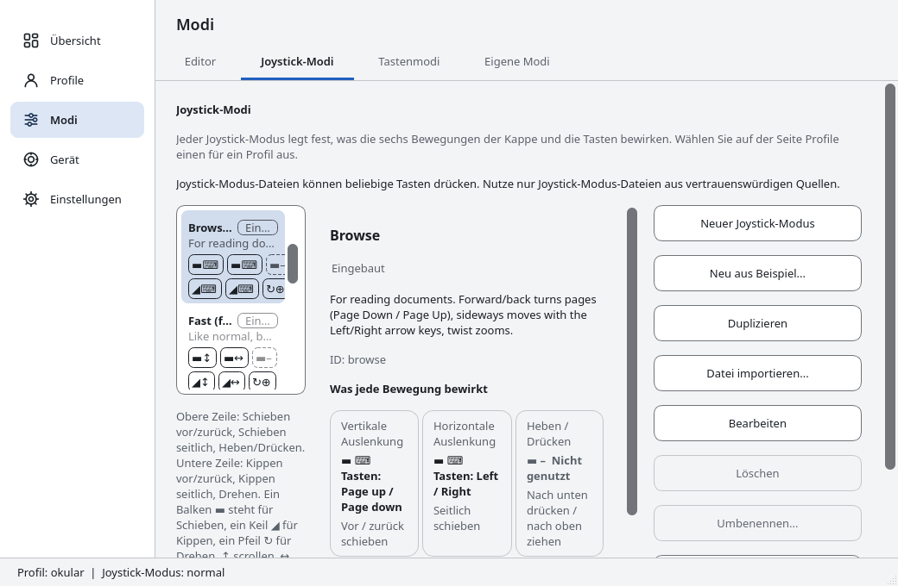
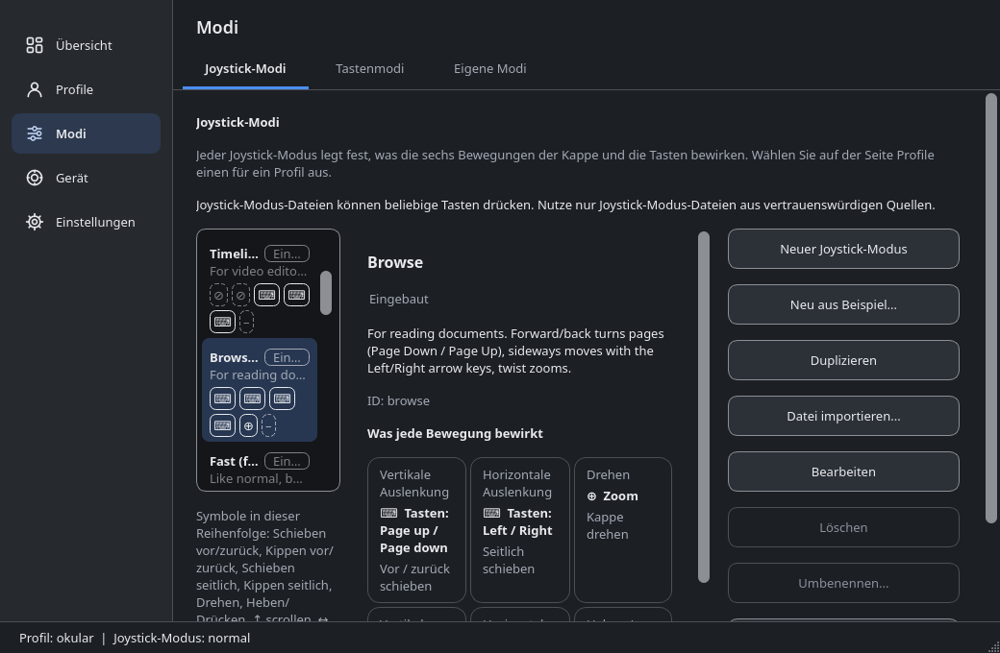
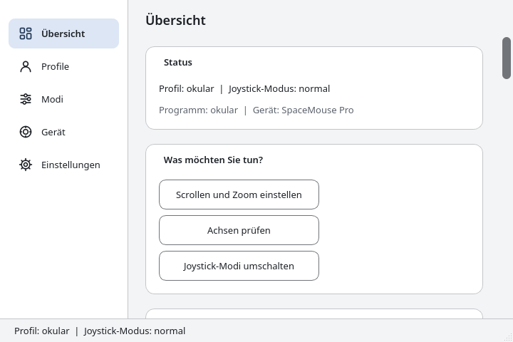
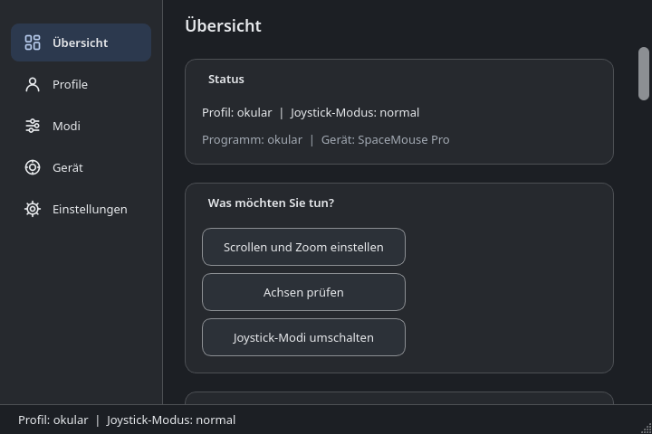

- Frei und quelloffen
- Linux · Windows · macOS
Mit der SpaceMouse überall scrollen und zoomen
dofscroll macht aus einer 3Dconnexion SpaceMouse ein Scrollrad für Browser, PDF-Reader und Karten.
Getestet unter RHEL 9, noch nicht unter Windows und macOS: zum Stand.




So fühlt es sich an
Browser
Lange Seiten gleiten vorbei.
PDF
Durch Dokumente blättern.
Karte
Kappe drehen zum Zoomen.
Deine SpaceMouse, nicht nur für 3D
Ohne: Die Kappe tut im Browser nichts. Mit dofscroll: Sie scrollt und zoomt.
Überall scrollen und zoomen
Browser, PDFs, Dokumente und Karten: schieben zum Scrollen, drehen zum Zoomen.
Ein Profil pro Programm
Sanftes Scrollen im Browser, Zeitleiste durchspulen im Videoschnitt. Auch pro Gerät.
Tasten, die mehr können
Modi wechseln, halten oder umschalten, oder eine Kombination wie Strg+0 senden, um den Zoom zurückzusetzen.
Fertige Modi
Slides, Media, Map, Browse, Timeline, Precision. Oder schreib deine eigenen.
Download
Linux
Fedora, RHEL, Debian, Ubuntu
Download für Linux.rpmoder.deb: mit der Paketverwaltung öffnen.Windows
Windows 10 und 11
Download für Windows
Das.exe-Setup ausführen. SmartScreen warnt zuerst: Weitere Informationen, dann Trotzdem ausführen.macOS
Apple Silicon
Download für macOS
DMG öffnen, App in Programme ziehen. Erster Start: Rechtsklick, dann Öffnen.
Getestet unter RHEL 9 mit SpaceMouse Pro und Compact. Die Windows- und macOS-Versionen kommen aus der CI und liefen noch nie auf einem Gerät: sag uns, wie es klappt.
Download prüfen
Lade auch SHA256SUMS.txt und führe diesen Befehl aus:
sha256sum -c --ignore-missing SHA256SUMS.txtUnterstützte Systeme: Requirements (englisch).
So geht’s
Installieren
Das Paket aus dem Download-Bereich holen.
Anstecken
SpaceMouse anschließen. Unter Linux
spacenavdstarten.Scrollen
Kappe schieben zum Scrollen, drehen zum Zoomen.
Linux-Befehle
sudo dnf install ./dofscroll-*.rpm # Debian, Ubuntu: sudo apt install ./dofscroll_*.deb
sudo systemctl enable --now spacenavd
systemctl --user enable --now dofscroll.service dofscroll-ui.serviceEs passiert nichts? Siehe Troubleshooting. Mehr: Installationsanleitung, Quick start (englisch).
Fragen
Funktioniert das in Firefox oder Chrome?
Ja. dofscroll sendet normale Scroll- und Zoom-Ereignisse, deshalb funktionieren Browser, PDF-Reader und Karten.
Ist es getestet?
Ausführlich getestet nur unter RHEL 9 (X11, KDE Plasma, SpaceMouse Pro und Compact). Weitere Linux-Distributionen wurden in CI-Containern auf Installierbarkeit geprüft. Die Windows- und macOS-Versionen werden von der CI gebaut und per Unit-Tests geprüft, wurden aber noch nie mit einem echten Gerät ausgeführt.
Funktioniert es unter Wayland?
Es gibt ein uinput-Backend. Es ist ungetestet, braucht eine udev-Regel für /dev/uinput, die du selbst aktivierst, und Programmprofile funktionieren nur mit kdotool unter KDE.
Brauche ich den 3Dconnexion-Treiber?
Nein. Unter Linux nutzt dofscroll das quelloffene spacenavd. Unter Windows und macOS liest es das Gerät selbst; das ist auf echter Hardware noch nicht geprüft.
Welche Modelle funktionieren?
Getestet: SpaceMouse Pro und Compact. Bekannt, aber ungetestet: Wireless, Pro Wireless, Enterprise, SpaceNavigator.
Stört es Blender oder mein CAD-Programm?
Programme, die die SpaceMouse selbst auslesen, bekämen die Eingabe doppelt. Schalte dofscroll dafür mit einem Programmprofil ab (ENABLED = 0).
Ist es kostenlos?
Ja, GPL-3.0-or-later, ohne Werbung, Tracking und Cookies. Es ist ein unabhängiges Projekt und steht in keiner Verbindung zu 3Dconnexion.